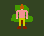

| Key | What for? |
|---|---|
| A / D | Turn left / right |
| W / S | Move forward / backward |
| I |
Chop trees, mine rocks. You need a few hits for it to work. Stand like this, then press i a few times: To mine rocks, you need pickaxes (see below). |
| J / L | Choose special action. Standing in front of a crafting table or furnace gives you other options. |
| K | Invoke special action, like smelting or crafting, planting a tree, etc. |
There are three tiers of pickaxes, every tier can mine everything the previous tier can mine and more:
You must craft the crown of epic nerdiness to win. Rumors say you need a few (3) diamonds and some (8) gold ingots.
Enemies were planned, but didn't make it into the game. You can die of hunger, but only very slooooowly.